Lu's Animated Gif／會動的照片
Part 1. The Springs of Central Europe，中歐之泉
Copyright © 2011 drcflu, All rights reserved
以下動畫由於檔案較大、恕請耐心等候
Some of the files are quite big, please be patient...
德勒斯登兹恩格宫／Dresdner Zwinger
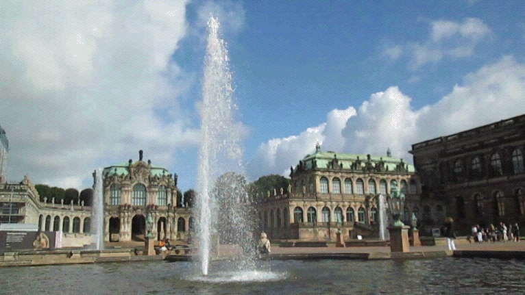
德勒斯登兹恩格宫／Dresdner Zwinger
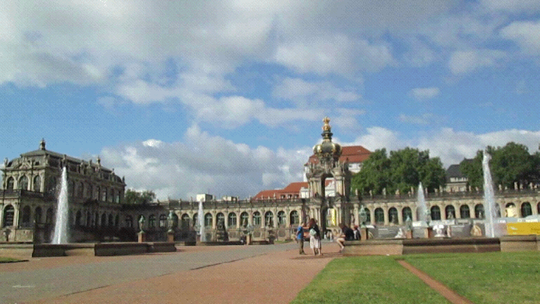
德勒斯登兹恩格宫／Dresdner Zwinger
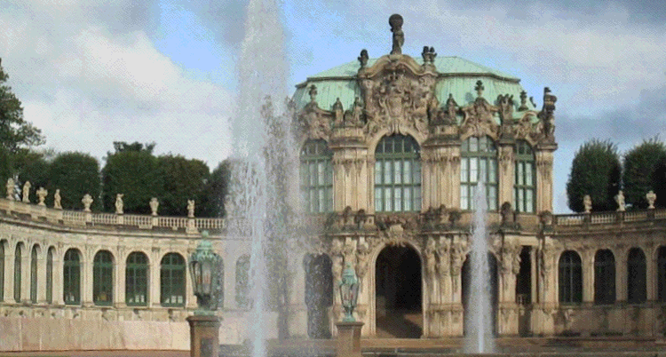
德勒斯登兹恩格宫／Dresdner Zwinger
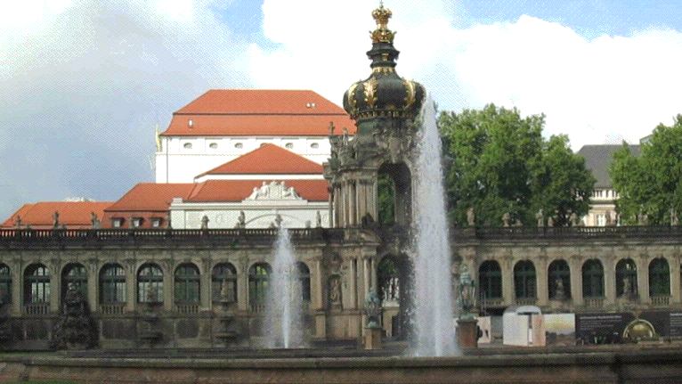
德勒斯登兹恩格宫／Dresdner Zwinger
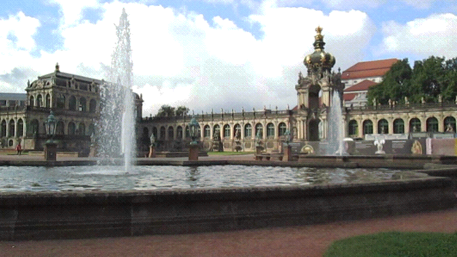
德勒斯登兹恩格宫／Dresdner Zwinger
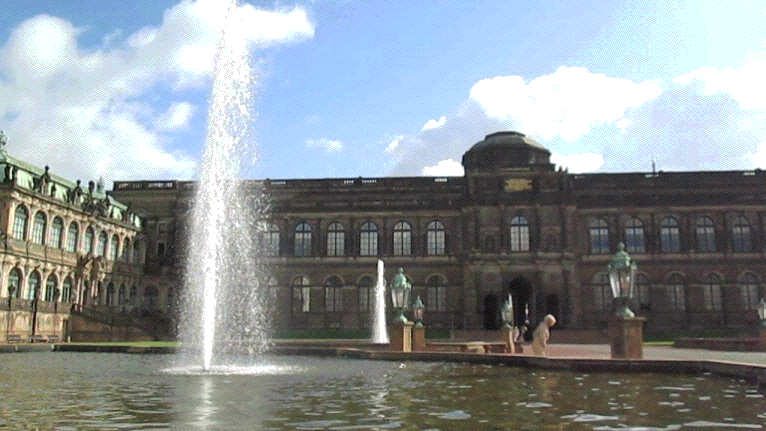
德勒斯兹恩格宫室內噴泉／Dresdner Zwinger
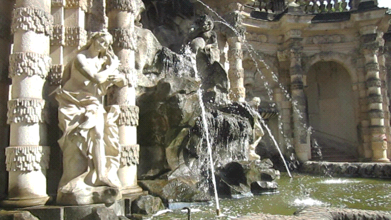
德勒斯登茲溫格宮室內噴泉／Dresdner Zwinger
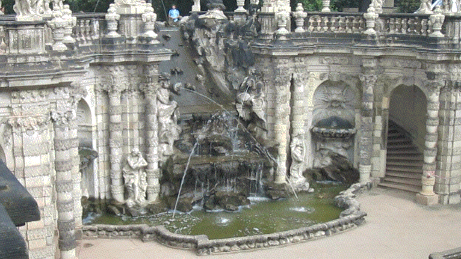
德勒斯兹恩格宫室內噴泉／Dresdner Zwinger
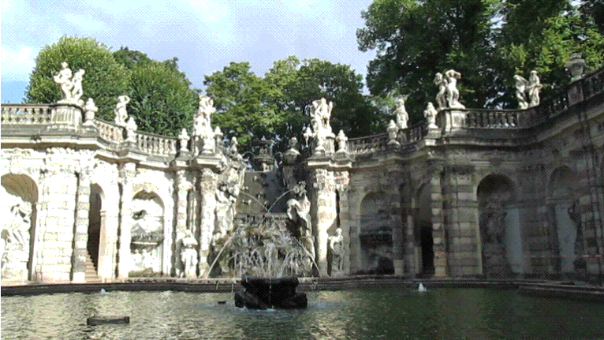
德勒斯登兹恩格宫門前噴泉／Dresdner Zwinger
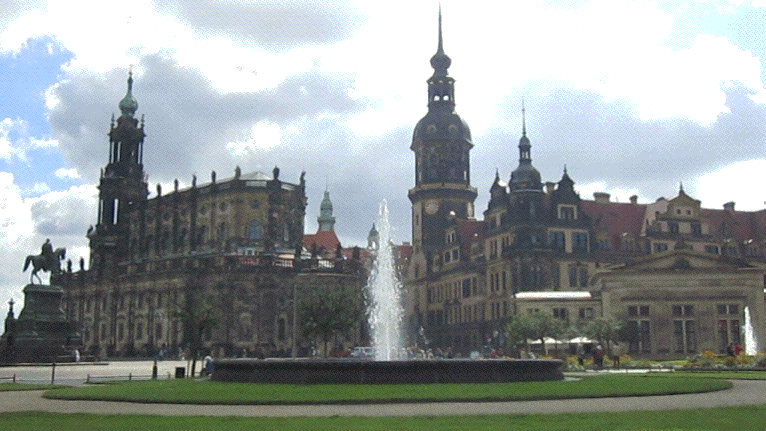
德勒斯登布魯薛爾觀景平台／Bruehl Terrace, Dresdner
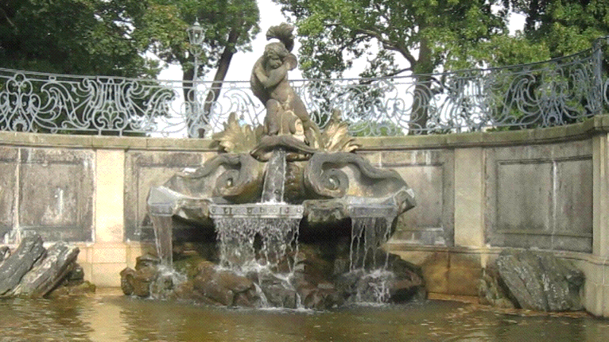
波次坦無憂宮／Schloss Sanssouci, Potsdam
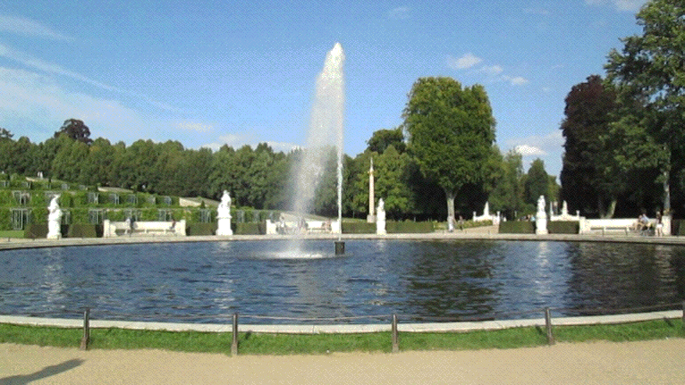
維也納美泉宮／Vienna Schonbrunn
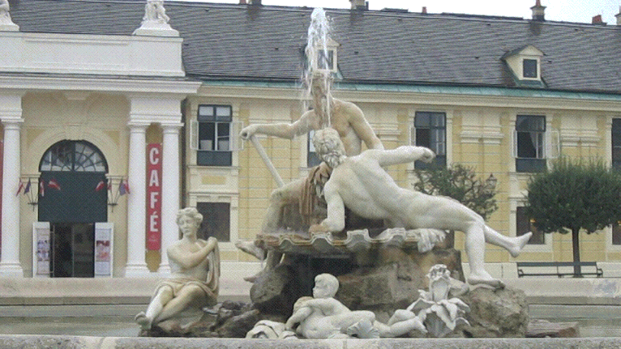
維也納美泉宮／Vienna Schonbrunn
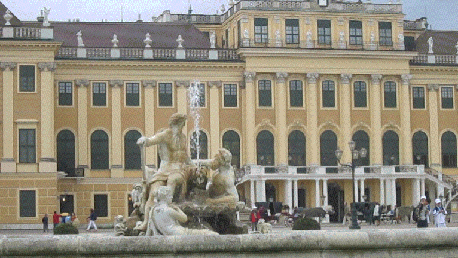
維也納美術史博物館／Kunsthistorisches Museum

維也納百水公寓／Hundertwasserhaus Wie
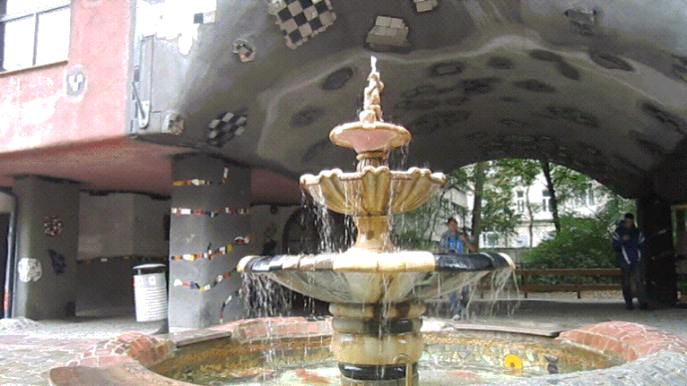
奧地利艾斯特哈吉夏宮／Esterhaza Palace


奧地利艾斯特哈吉夏宮／Esterhaza Palace 維也納霍夫堡宮／Vienna Hofburg

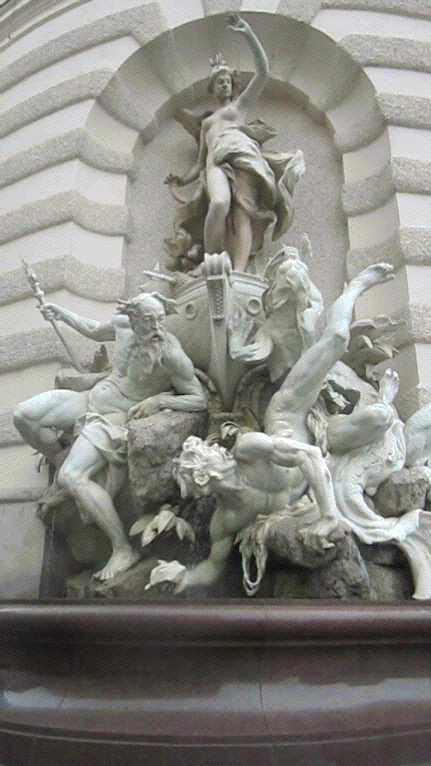
捷克溫泉鄉卡絡威瓦利／Karlovyvary
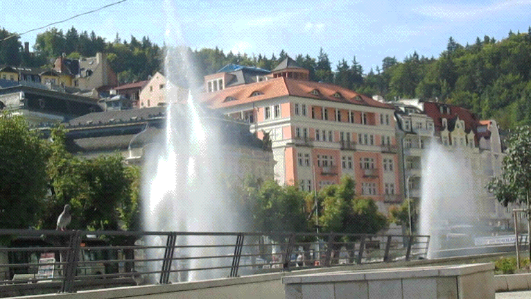
捷克溫泉鄉卡洛威瓦利／Karlovyvary
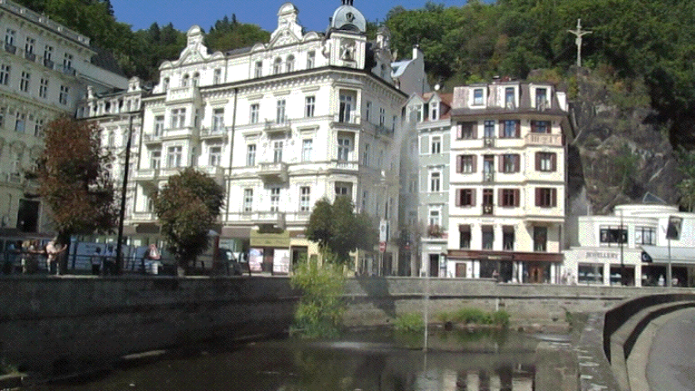
捷克溫泉鄉卡洛威瓦利／Karlovyvary
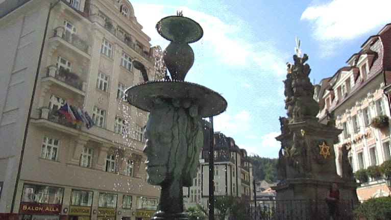
捷克古城庫倫諾夫／Krumlov
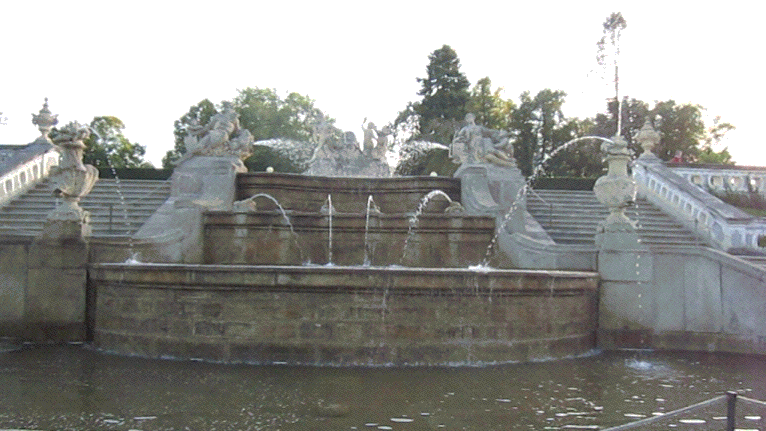
捷克古城庫倫諾夫／Krumlov
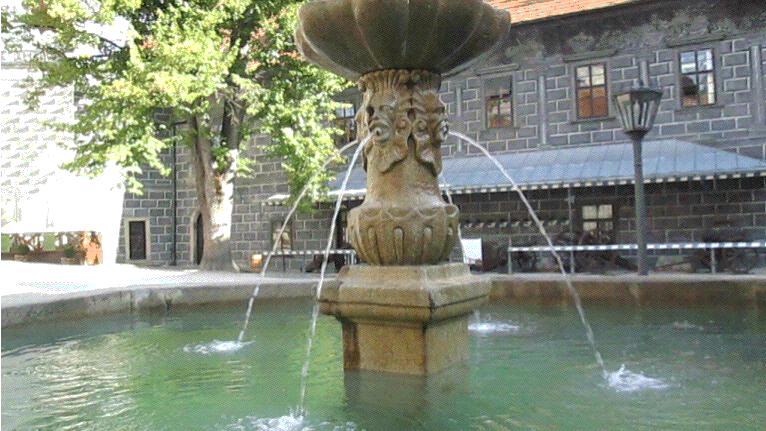
捷克布拉格皇家城堡／Royal Castle, Prague
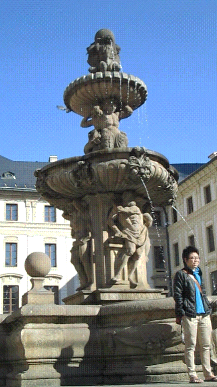
傑克布拉格皇家城堡／Royal Castle, Prague
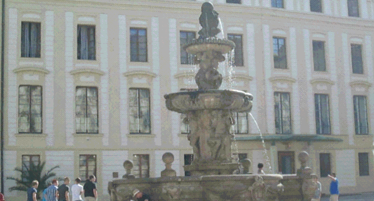
|
|
|
|
|